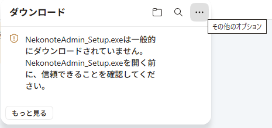
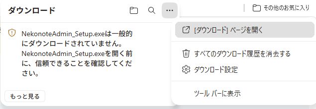
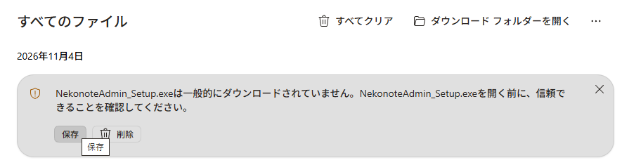

9つの強み どれも、技工所の実際の仕事に合わせました
スマホで、パソコンに入力できる
患者名などは、スマホのフリック入力で打てます。iPhone でも Android でも。つなぐのはパソコンの画面の QR コードを読むだけで、ほかのアプリは要りません。
マウスへの持ちかえを、とことん減らす
秒単位の時間もコストです。Enter で次の欄、F2 で行を増やす、F8 で次の人。印刷も F4 のキー1つで、マウスは要りません。日付は 26/11/1 と打つだけ。
印刷もコストカット
普通のコピー用紙の A4・A5 だけで、専用の用紙は要りません。内蔵の患者カードを使えば、技工物に添える患者表も印刷して貼れます。指示書の印刷は2枚綴りで足ります。
歯式を書くかは、選べる
納品書に歯式が必要なら入れられます。省けば、そのぶん時間を減らせます。打ち方（1人ずつ・医院ごとにまとめて・模型が届いたときから）も、質問に答えて選べます。
コードを打つだけで、医院ごとの単価
医院ごとの商品表から、製作物と単価が入ります。あとは患者名とグラムを打つだけ。
金属の請求・在庫・月末報告までひとつで
預かりの金属も、自社の金属も、使用量を入れるだけで在庫から請求までまとめて管理します。1つの医院で「Pd は預かり、銀は請求」のように細かく決められます。月末のメタル報告は Excel で出せます。
ベースアップ支援料も Br も自動で計算
ベースアップ支援料は、対象の技工物の数を納品書で自動で数えます。Br は何を何本か選ぶだけで、合計の金額と構成の技工物を備考に書きます。
入荷の管理で、その日の分が一覧に
模型を預かったときに患者カードに入れておくと、納品日が自動で決まり、当日はその日の分が一覧に並びます。金属の量を打つだけで、医院ごとの納品書と患者表が出ます。
請求書は、印刷も保存もメールも
締日ごとの明細請求書を、前回請求・入金・繰越・消費税まで計算。インボイスの登録番号つき。印刷も、PDF での保存も、そのまま医院へのメール送信もできます。
安心して使えるように
- データは技工所のパソコンの中だけ。医院や患者さんのデータを、インターネットに上げることはありません。請求書のメールも、技工所のメールから医院へ直接送ります。
- 毎日、自動でバックアップ。間違えても、前の状態に戻せます。USB メモリなどにも写せます。
- 新しいバージョンは、画面のボタン1つで入れられます。データは消えません。
- キーボードが苦手でも大丈夫。スマホで打った文字を、パソコンの画面に飛ばせます（画面の QR コードを読むだけ。スマホのアプリも、Wi-Fi の設定も要りません。打った文字は暗号にして届けるので、途中では読めません。インターネットがないときは、同じ Wi-Fi の中だけでもつなげます）。
- 動作環境：Windows 11（64ビット）。画面は Microsoft Edge か Google Chrome で使います。
Windows 10 でも動きますが、マイクロソフトのサポートが終わっているため、正式な対応外です。Mac・タブレットでは使えません。
料金 表示はすべて税込みです
月額（クレジットカード）
2,970円 / 月
これが全部入って、2,970円。オプション料金はありません。
- スマホ連携（スマホで入力）
- メタル管理（請求・在庫・月末報告）
- 入荷・在庫の管理（患者カード・患者表）
- 納品書から請求書の発行まで（PDF・メール送信も）
- 毎月、自動でお支払い
- いつでも解約できます（お支払い済みの月の末まで使えます）
- 新しいバージョンは無料
- お支払いはクレジットカードだけです
パソコン1台ごとの契約です。お支払いが止まった場合は、7日のあとで「見るだけモード」になります（今までの伝票・請求書を見る・印刷する・PDF を作ることはできます。入力はできません）。お支払いを再開すると、すぐ元に戻ります。
はじめ方
- アプリを入れる インストール用のファイルをダウンロードして、「次へ → インストール → 完了」。管理者のパスワードは要りません。
「一般的にダウンロードされていません」と出たとき（写真つき）
使う人がまだ少ないアプリなので、Edge が念のため出しています。こわれたファイルやウイルスではありません。
- ① Edge の右上のダウンロードのマーク（↓）を押すと、警告の窓が出ます。②「ダウンロード」の右の …（その他のオプション）を押します。

- ③ [ダウンロード] ページを開く を押します。

- ④ 開いたページの「すべてのファイル」に出ている項目の 保存 を押します。保存できたら「ファイルを開く」を押します。

- 青い画面で「Windows によって PC が保護されました」と出たら、詳細情報 を押してから 実行 を押します。インストールの画面が出たら「次へ → インストール → 完了」です。
警告の窓の「詳細情報」や「このファイルは安全であることを報告する」を押しても、ダウンロードはできません。
- ① Edge の右上のダウンロードのマーク（↓）を押すと、警告の窓が出ます。②「ダウンロード」の右の …（その他のオプション）を押します。
- アプリで申し込む アプリを開くと「ライセンスキーとバージョン」の画面が出ます。会社名とメールアドレスを入れて［申し込む］を押すと、キーが自動で入り、メインメニューが出ます。これで使えます。
うまくいかないときは、同じ画面の「メールで申し込む」を押してください。宛先と申込コード（NK- で始まる、パソコンごとの番号）が入ったメールが開くので、そのまま送信します。メールが開かないときは、スマホなどから cathandlabo@gmail.com へ、画面の申込コードと会社名を書いて送ってください。キーのファイルをメールでお送りします。 - 初期設定をする 初期設定説明書（写真つき）のとおりに、会社の情報・取引先・商品を入れます。商品と単価を書き出しておく紙（手書きの料金表・印刷用）もあります。今のアプリ（Access）の商品・単価・医院・繰越残高や、Excel・CSV の表からも取り込めます（元のファイルは書き換えません）。はじめて開いたときに出る「はじめに」の画面の QR コードから、スマホでも見られます。
設定が終わったら、毎日の使い方は 使い方説明書（写真つき） へ。アプリのメインメニューの「使い方説明書」からも開けます。 - お支払い クレジットカードでお支払いいただくと、キーは自動で届きます（すぐ使いたいときは、アプリの「今すぐライセンスキーを受け取る」を押します）。その後の更新も自動です。
お問い合わせ
メールでお受けするのは、キー・お支払い・アプリの不具合についてだけです。パソコン・プリンター・インターネットなど、アプリ以外のことにはお答えできません。お返事には数日かかることがあります。電話は受け付けていません。